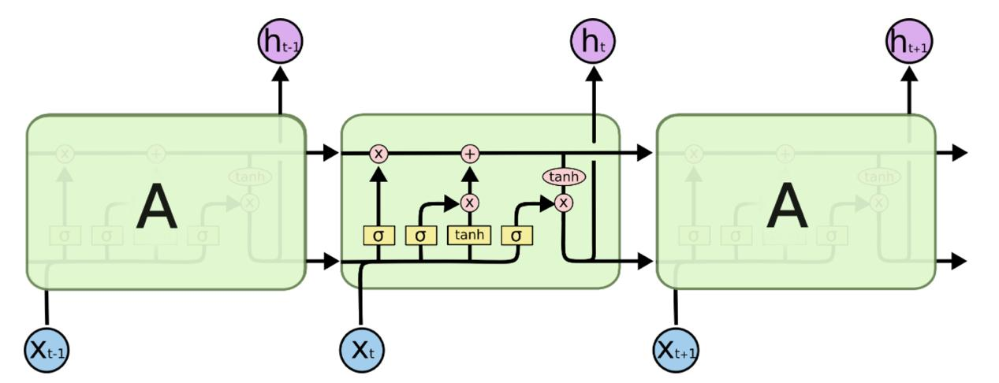
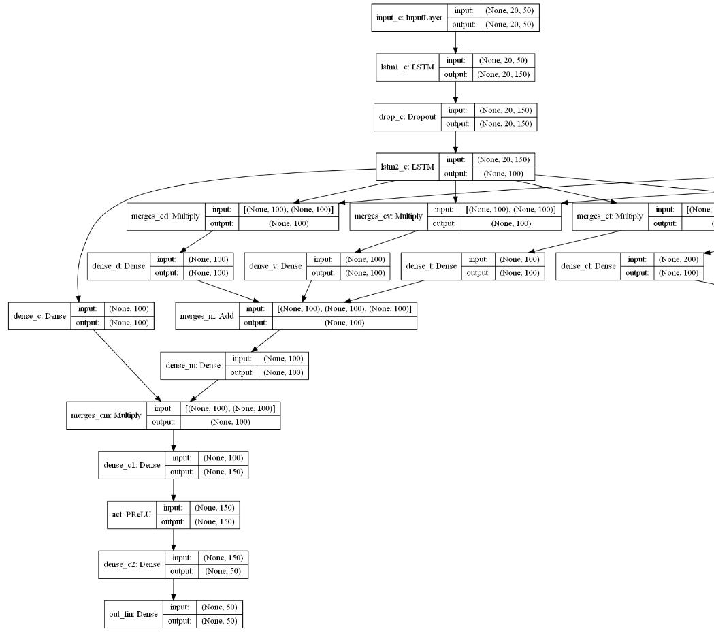
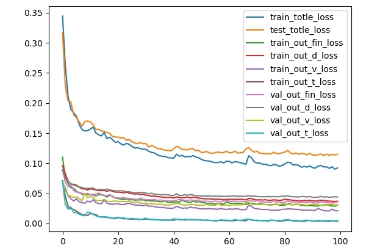
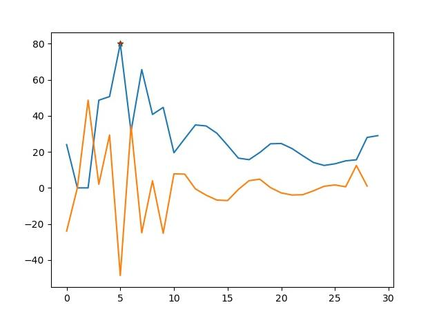
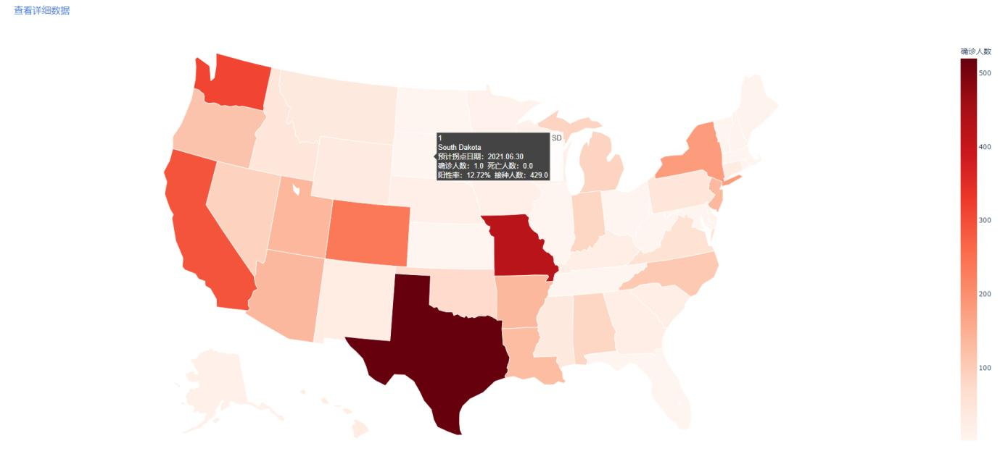
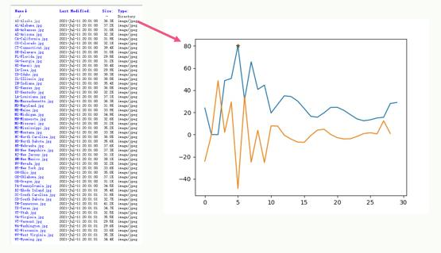

用户场景
-
随着国际新冠病毒感染人数不断增加，国内防疫压力不断增大，并且随着秋冬季节的来临，国内也不断有地区出现或零星或聚集性病例。
目前查找密接人员的工作主要还是靠大数据筛查和各单位登记筛查是否有密接人员。此查询系统能充分发挥群众的自主能动性，每个人都可以使用该自查系统，输入地点等信息，通过结果确认地点是否有疫情信息，起到一个防范的作用
需求规定
-
在网页上，利用数据库和Python等工具，利用现有的软件，配置一定的硬件，开发一个具有开放体系结构、易扩充的、易维护的、具有良好人机交互的疫情信息展示及预测系统；
实现用户能够清晰查看美国地图及其各项指标
目标
-
给定某个国家的疫情数据，将数据存放到HDFS的某个文件夹，再通过数据分析框架出来截止日期确诊人数和死亡人数、某国各州的确诊人数和死亡人数、确诊人数最多的州、死亡人数最多的州。
使用合理的算法计算疫情拐点出现的日期,将分析出来的数据通过Sqoop导出到MySQL,搭建Web项目，将数据显示到地图图表上，实现疫情信息展示系统及预测系统
架构图

-
-
总体可分为前端界面和后端处理两大部分，其中，前端界面目前是展示美国地图并显示各洲的基本信息，
包括出生率，死亡率，疫苗接种率和阳性率，并可以通过点击链接查看美国各洲的近期确诊率变化与拐点
-
后端数据是将处理好的数据上传至HDFS，在进行模型训练时，从节点读取数据，并利用了LSTM训练完毕的模型进行数据预测，将预测后的数据上传到数据库；最后，利用数据库中的数据进行分析得出拐点，并搭建前端界面
流程图

相关技术介绍
-
LSTM网络结构介绍
-
长短记忆神经网络——通常称作LSTM，是一种特殊的RNN，能够学习长的依赖关系。
-
LSTM的关键是细胞状态，表示细胞状态的这条线水平的穿过图的顶部。细胞的状态类似于输送带，细胞的状态在整个链上运行，只有一些小的线性操作作用其上，信息很容易保持不变的流过整个链。LSTM确实具有删除或添加信息到细胞状态的能力，这个能力是由被称为门(Gate)的结构所赋予的。
门(Gate)是一种可选地让信息通过的方式。 它由一个Sigmoid神经网络层和一个点乘法运算组成。
-
LSTM有三个门，用于保护和控制细胞的状态。分别是“遗忘门”、“输入门”、“输出门”
- 
-
滑动窗口预测拐点介绍
-
滑动窗口算法在一个特定大小的字符串或数组上进行操作，而不在整个字符串和数组上操作，这样就降低了问题的复杂度，从而也达到降低了循环的嵌套深度。该思想可以用来解决一些查找满足一定条件的连续区间的性质（长度等）的问题。由于区间连续，因此当区间发生变化时，
可以通过旧有的计算结果对搜索空间进行剪枝，这样便减少了重复计算，降低了时间复杂度
-
本次拐点的预测算法我们选择了滑动窗口算法这种思想，通过检测窗口尺寸内的数据，即使用机器学习中的线性模型拟合计算出每个数据点的斜率，也就是求每个点的导数。
-
理想状态下，拐点应是导数为0的点；实际情况下，很难出现这种理想点，因此，我们设置斜率正值阈值和斜率负值阈值，拐点即是斜率正值与斜率负值的分界点
-
通过检测该窗口内斜率预测序列的斜率数据值之和是否符合两个阈值，可以防止抖动，即防止小的波动现象的出现。
如果落在两个阈值之间 那么说明该点符合拐点要求，添加进拐点列表即可
主要功能模块介绍
1.数据处理
-
此部分包括数据读取、数据合并和数据清洗。我们选取了约翰霍普金森大学的数据，包括确诊人数，死亡人数、疫苗接种人数和阳性率。由于此数据很多都是精确到各个县的数据，根据题目要求，我们需要将其每个州的数据合并，并选出美国主要的50个洲。为了更好的预测与分析，我们考虑使用每日新增而不是总量，然而发现，由于数据统计修正，
会使每日新增出现负数，因此我们考虑将负数数据进行处理，处理方法为，将负数数据使用前一天的一半数值进行替代
2.神经网络搭建与预测
-
我们的大体思路是先对各个数据进行一个构建-遗忘-构建的操作，然后再进行数据融合。 为了提高确诊人数的影响，我们选择了先Multiply再Add的融合方法。最后，我们将融合后的数据进行全连接、激活，然后输出。
搭建出的部分网络如下图所示
- 
-
我们设置epochs为100，batch_size为24，timestep为20进行训练，其训练总损失值为确诊、死亡、阳性率、疫苗接种人数的训练损失总和，为0.0817；
其测试总损失值为确诊、死亡、阳性率、疫苗接种人数的测试损失总和，为0.1189
- 
3.拐点分析
-
此部分的流程为：首先利用滑动窗口对数据进行检测，检测窗口尺寸内的数据，即使用机器学习中的线性模型拟合计算出每个数据点的斜率，也就是求每个点的导数。
根据实际情况，我们设置斜率正值阈值和斜率负值阈值，拐点即是斜率正值与斜率负值的分界点。
-
通过检测该窗口内斜率预测序列的斜率数据值之和是否符合两个阈值，可以防止抖动，即防止小的波动现象的出现。
如果落在两个阈值之间 那么说明该点符合拐点要求，添加进拐点列表即可
-
通过不断修改阈值得到合适的结果，拐点预测结果如下图所示。
- 
4.前端界面
-
前端界面使用的是plotly的库，采用热力图的形式，确诊人数越多，颜色越深。
此外，当鼠标滑到某一个洲时，可以显示该洲的名称，确诊人数、死亡人数、阳性率和疫苗接种人数
- 
- 
Thank you for your reading